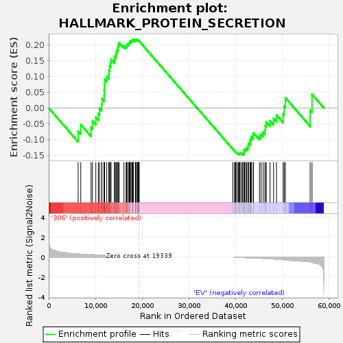

| | | Dataset | 306_EV_express.306_EV.cls#306_versus_EV |
| Phenotype | 306_EV.cls#306_versus_EV |
| Upregulated in class | 306 |
| GeneSet | HALLMARK_PROTEIN_SECRETION |
| Enrichment Score (ES) | 0.21650554 |
| Normalized Enrichment Score (NES) | 0.66810244 |
| Nominal p-value | 1.0 |
| FDR q-value | 1.0 |
| FWER p-Value | 1.0 |
Table: GSEA Results Summary

Fig 1: Enrichment plot: HALLMARK_PROTEIN_SECRETION
Profile of the Running ES Score & Positions of GeneSet Members on the Rank Ordered List
| SYMBOL | TITLE | RANK IN GENE LIST | RANK METRIC SCORE | RUNNING ES | CORE ENRICHMENT | | 1 | SSPN | NNN | 6295 | 0.314 | -0.0733 | Yes |
| 2 | STAM | NNN | 6858 | 0.283 | -0.0524 | Yes |
| 3 | ARFGEF2 | NNN | 9060 | 0.259 | -0.0620 | Yes |
| 4 | ARFGEF1 | NNN | 9363 | 0.244 | -0.0408 | Yes |
| 5 | GOLGA4 | NNN | 10077 | 0.219 | -0.0293 | Yes |
| 6 | SCAMP1 | NNN | 10620 | 0.198 | -0.0172 | Yes |
| 7 | MON2 | NNN | 10862 | 0.191 | -0.0007 | Yes |
| 8 | DST | NNN | 11327 | 0.182 | 0.0110 | Yes |
| 9 | KIF1B | NNN | 11389 | 0.179 | 0.0293 | Yes |
| 10 | TOM1L1 | NNN | 11859 | 0.164 | 0.0390 | Yes |
| 11 | SGMS1 | NNN | 11878 | 0.164 | 0.0563 | Yes |
| 12 | CLCN3 | NNN | 11893 | 0.163 | 0.0737 | Yes |
| 13 | IGF2R | NNN | 11955 | 0.162 | 0.0901 | Yes |
| 14 | PAM | NNN | 12412 | 0.148 | 0.0982 | Yes |
| 15 | SNX2 | NNN | 12850 | 0.137 | 0.1056 | Yes |
| 16 | ATP7A | NNN | 12897 | 0.136 | 0.1194 | Yes |
| 17 | ICA1 | NNN | 13038 | 0.132 | 0.1313 | Yes |
| 18 | USO1 | NNN | 13201 | 0.128 | 0.1423 | Yes |
| 19 | VPS45 | NNN | 13337 | 0.124 | 0.1533 | Yes |
| 20 | GALC | NNN | 14064 | 0.106 | 0.1524 | Yes |
| 21 | AP1G1 | NNN | 14111 | 0.105 | 0.1630 | Yes |
| 22 | RAB5A | NNN | 14378 | 0.099 | 0.1691 | Yes |
| 23 | ATP6V1B1 | NNN | 14448 | 0.097 | 0.1784 | Yes |
| 24 | LMAN1 | NNN | 14678 | 0.092 | 0.1845 | Yes |
| 25 | OCRL | NNN | 14816 | 0.090 | 0.1918 | Yes |
| 26 | YIPF6 | NNN | 14838 | 0.089 | 0.2010 | Yes |
| 27 | ADAM10 | NNN | 15084 | 0.083 | 0.2057 | Yes |
| 28 | RPS6KA3 | NNN | 16093 | 0.065 | 0.1956 | Yes |
| 29 | CLTC | NNN | 16546 | 0.061 | 0.1944 | Yes |
| 30 | AP3B1 | NNN | 16682 | 0.058 | 0.1983 | Yes |
| 31 | SEC31A | NNN | 16790 | 0.055 | 0.2025 | Yes |
| 32 | ATP1A1 | NNN | 17109 | 0.048 | 0.2022 | Yes |
| 33 | ANP32E | NNN | 17260 | 0.045 | 0.2045 | Yes |
| 34 | GNAS | NNN | 17318 | 0.044 | 0.2082 | Yes |
| 35 | NAPA | NNN | 17401 | 0.042 | 0.2114 | Yes |
| 36 | COPB2 | NNN | 17603 | 0.038 | 0.2121 | Yes |
| 37 | NAPG | NNN | 17799 | 0.034 | 0.2124 | Yes |
| 38 | SNAP23 | NNN | 17966 | 0.031 | 0.2130 | Yes |
| 39 | COG2 | NNN | 17975 | 0.031 | 0.2162 | Yes |
| 40 | GBF1 | NNN | 18139 | 0.028 | 0.2164 | Yes |
| 41 | PPT1 | NNN | 18550 | 0.019 | 0.2114 | Yes |
| 42 | ERGIC3 | NNN | 18564 | 0.019 | 0.2132 | Yes |
| 43 | RAB2A | NNN | 18584 | 0.018 | 0.2149 | Yes |
| 44 | DNM1L | NNN | 18648 | 0.017 | 0.2156 | Yes |
| 45 | MAPK1 | NNN | 18695 | 0.016 | 0.2165 | Yes |
| 46 | RAB14 | NNN | 18963 | 0.010 | 0.2131 | No |
| 47 | ARCN1 | NNN | 19003 | 0.009 | 0.2134 | No |
| 48 | TMED10 | NNN | 19064 | 0.008 | 0.2133 | No |
| 49 | SEC22B | NNN | 19105 | 0.007 | 0.2134 | No |
| 50 | ABCA1 | NNN | 19135 | 0.006 | 0.2136 | No |
| 51 | COPE | NNN | 19252 | 0.003 | 0.2120 | No |
| 52 | SOD1 | NNN | 19271 | 0.003 | 0.2119 | No |
| 53 | STX16 | NNN | 19319 | 0.001 | 0.2113 | No |
| 54 | TSG101 | NNN | 19335 | 0.000 | 0.2110 | No |
| 55 | SH3GL2 | NNN | 39388 | 0.000 | -0.1304 | No |
| 56 | ARFIP1 | NNN | 39754 | -0.001 | -0.1365 | No |
| 57 | YKT6 | NNN | 39884 | -0.004 | -0.1382 | No |
| 58 | GOSR2 | NNN | 39938 | -0.006 | -0.1385 | No |
| 59 | SEC24D | NNN | 40057 | -0.009 | -0.1395 | No |
| 60 | SCAMP3 | NNN | 40329 | -0.015 | -0.1425 | No |
| 61 | TMX1 | NNN | 40594 | -0.021 | -0.1447 | No |
| 62 | LAMP2 | NNN | 40711 | -0.023 | -0.1441 | No |
| 63 | ZW10 | NNN | 40799 | -0.025 | -0.1429 | No |
| 64 | RAB22A | NNN | 40942 | -0.028 | -0.1422 | No |
| 65 | AP2B1 | NNN | 41261 | -0.035 | -0.1439 | No |
| 66 | AP3S1 | NNN | 41465 | -0.038 | -0.1432 | No |
| 67 | BET1 | NNN | 41733 | -0.044 | -0.1430 | No |
| 68 | RAB9A | NNN | 41780 | -0.046 | -0.1389 | No |
| 69 | SCRN1 | NNN | 41783 | -0.046 | -0.1340 | No |
| 70 | COPB1 | NNN | 41888 | -0.048 | -0.1306 | No |
| 71 | STX7 | NNN | 42155 | -0.053 | -0.1294 | No |
| 72 | CLN5 | NNN | 42343 | -0.057 | -0.1265 | No |
| 73 | CD63 | NNN | 42625 | -0.063 | -0.1245 | No |
| 74 | TSPAN8 | NNN | 42655 | -0.064 | -0.1181 | No |
| 75 | M6PR | NNN | 42725 | -0.065 | -0.1122 | No |
| 76 | AP2M1 | NNN | 43078 | -0.073 | -0.1104 | No |
| 77 | CTSC | NNN | 43113 | -0.074 | -0.1030 | No |
| 78 | ARF1 | NNN | 43246 | -0.077 | -0.0970 | No |
| 79 | AP2S1 | NNN | 43371 | -0.080 | -0.0905 | No |
| 80 | VAMP7 | NNN | 43736 | -0.088 | -0.0873 | No |
| 81 | GLA | NNN | 43806 | -0.090 | -0.0788 | No |
| 82 | RER1 | NNN | 45082 | -0.107 | -0.0890 | No |
| 83 | TPD52 | NNN | 45417 | -0.112 | -0.0826 | No |
| 84 | ARFGAP3 | NNN | 45853 | -0.122 | -0.0768 | No |
| 85 | ATP6V1H | NNN | 46252 | -0.133 | -0.0693 | No |
| 86 | VAMP4 | NNN | 46324 | -0.135 | -0.0560 | No |
| 87 | CLTA | NNN | 46536 | -0.140 | -0.0445 | No |
| 88 | TMED2 | NNN | 47339 | -0.162 | -0.0407 | No |
| 89 | VAMP3 | NNN | 48093 | -0.185 | -0.0336 | No |
| 90 | STX12 | NNN | 48717 | -0.207 | -0.0219 | No |
| 91 | VPS4B | NNN | 50146 | -0.255 | -0.0188 | No |
| 92 | BNIP3 | NNN | 50361 | -0.267 | 0.0063 | No |
| 93 | KRT18 | NNN | 50618 | -0.281 | 0.0322 | No |
| 94 | CAV2 | NNN | 55917 | -0.476 | -0.0067 | No |
| 95 | EGFR | NNN | 56316 | -0.522 | 0.0428 | No |
Table: GSEA details [plain text format]
Fig 2: HALLMARK_PROTEIN_SECRETION
Blue-Pink O' Gram in the Space of the Analyzed GeneSet
Fig 3: HALLMARK_PROTEIN_SECRETION: Random ES distribution
Gene set null distribution of ES for HALLMARK_PROTEIN_SECRETION